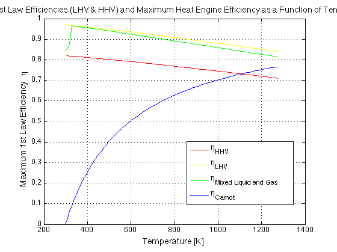
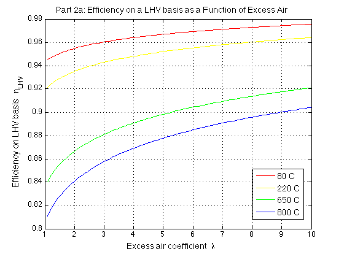
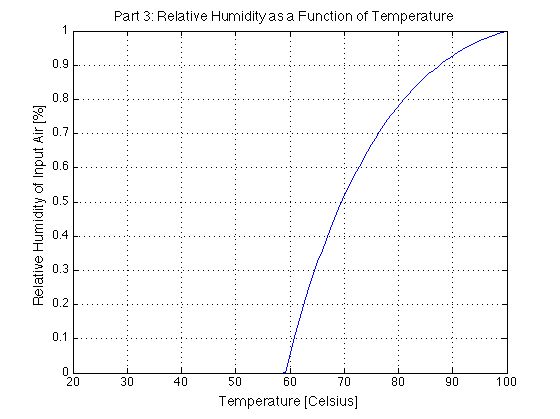
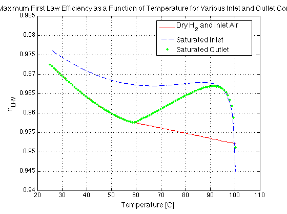

Contents
% ME140 PROJECT 4: FUEL CELLS % ---------------------------- % FILENAME: me140_project4.m % Jon Renslo, Emily Bohl, Frankie Willcox, Natasha Berk, Kendall Fagan % 4/15/16 - Created Jon Renslo close all; clear; clc; % Constants G_TO_KG = 10^-3; KPA_TO_PA = 10^3; KJ_TO_J = 10^3; C_TO_K = 273.15; N_TO_O = 79/21; % Engineering Air Molar Mass Ratio of Nitrogen to Oxygen % Molar Masses MM_h = 1.00794; MM_o = 15.9994; MM_n = 14.0067; MM_h2o = 2*MM_h + MM_o; MM_air = 28.97; % -------------------------------------------------- % Part 1: Efficiency of PEM Fuel Cells Found 3 Ways % -------------------------------------------------- % ASSUME: isothermal, isobaric i.e. reversible % USE: First- Law Effiency, eta = (-m_reactants*dg_react)/(mfuel*HV) where HV = LHV or HHV % SOURCE: LEC 8, SLIDE 13 npts = 100; HHV_h2 = 141.8*10^6; % J/kg, Higher Heating Value LHV_h2 = 120.0*10^6; % J/kg, Lower Heating Value T = linspace(25+C_TO_K,1000+C_TO_K,npts); lambda = 4; % Equivalence Ratio(ASSUME: 100% excess air) Patm = 101.3*KPA_TO_PA; % Pa, Preact = Pprod = Patm eta = zeros(size(T)); pctVap = zeros(size(T)); delG = zeros(size(T)); for i = 1:length(T) %loop temperature (cols) [eta(i), pctVap(i),delG(i),~] = PEMstoich(lambda,T(i),Patm); end %PEMstoich assumes per mol of h2, 1mol h2 burned mass_h2 = 1*(MM_h*2)*G_TO_KG; eta_HHV = -delG / (HHV_h2 * mass_h2); eta_LHV = -delG / (LHV_h2 * mass_h2); eta_carnot = carnotEff(T,T(1)); % ASSUME: Tcold = 25 degrees C figure(1); plot(T,eta_HHV,'r', T,eta_LHV,'y',T,eta,'g', T,eta_carnot,'b'); legend('\eta_{HHV}','\eta_{LHV}','\eta_{Mixed Liquid and Gas}','\eta_{Carnot}', 'Location', 'Best'); xlabel('Temperature [K]'); ylabel('Maximum 1st Law Efficiency \eta'); title('Part 1: First Law Efficiencies (LHV & HHV) and Maximum Heat Engine Efficiency as a Function of Temperature'); plotfixer(); grid on % -------------------------------------------- % PART 2a: Efficiency as a Function of Lambda % -------------------------------------------- T_C = [80 220 650 800]; T = T_C + C_TO_K; lambda = linspace(1,10,npts); % (Comment back in for Part 2) Patm = 101.3*KPA_TO_PA; % Pa, Preact = Pprod = Patm for Ti = 1:length(T) for li = 1:length(lambda) [etaLambda(li,Ti), pctVapLambda(li,Ti) ,delGLambda(li,Ti),~] ... = PEMstoich(lambda(li),T(Ti),Patm); end end mass_h2 = 1* (MM_h*2)*G_TO_KG; delH_LHV = LHV_h2 * mass_h2; etaLambda_LHV = -delGLambda/delH_LHV; figure(2); plot(lambda,etaLambda_LHV(:,1),'r',lambda,etaLambda_LHV(:,2),'y',lambda,etaLambda_LHV(:,3),'g',lambda,etaLambda_LHV(:,4),'b'); legend('80 C','220 C','650 C','800 C','Location','Best'); xlabel('Excess air coefficient \lambda'); ylabel('Efficiency on LHV basis \eta_{LHV}'); title('Part 2a: Efficiency on a LHV basis as a Function of Excess Air ') plotfixer grid on; spec = Spec(); spec.mol_air = 5; 
Part 3
what humidity necesary for inlet air to obtain saturated exit? below certain temp, condensate forms, so add no water. plot inlet air humidity vs T 25-100C
% questions: % must we take into account the diffusion thru membrane? -> don't need to % worry about gas diffusion through MEA membrane lambda = 2; % as before Patm = 101.3*KPA_TO_PA; % Pa, Preact = Pprod = Patm Ptotal = Patm; % find psat at exit based on temp, T = linspace(25,100,npts); T = T + C_TO_K; psat = PsatW(T); mol_air = zeros(size(T)); mol_o2_react = zeros(size(T)); mol_n2 = zeros(size(T)); for i = 1:length(T) [~,~,~,tempSpecs] = PEMstoich(lambda, T(i), Ptotal); mol_air(i) = tempSpecs.mol_air; mol_o2_react(i) = tempSpecs.mol_o2_react; mol_n2(i) = tempSpecs.mol_n2; end % find mole fraction of water in products y_h2o = psat./Ptotal; %Assume Pv = Psat beta = (4.26 .* y_h2o)./ (1 - y_h2o); % if less than what is formed, add the difference to dry air reagent alpha = beta - 1; %if condensation is forming just from what is formed, don't add any %humidity to reactants alpha(alpha < 0) = 0; y_h2o_react = alpha./(mol_o2_react + mol_n2 + alpha); Pv_react = Ptotal.*y_h2o_react; Pv_react(Pv_react>psat) = psat(Pv_react>psat); % if Pv > psat, Pv = psat hum_rel = Pv_react./psat; % plot relative humidity figure(3); plot(T - C_TO_K,hum_rel) xlabel('Temperature [Celsius]'); ylabel('Relative Humidity of Input Air [%]'); title('Part 3: Relative Humidity as a Function of Temperature') plotfixer(); grid on;
Part 4
(1) part 1 plot, (2) part 1 plot except inlet humidity = 100%, (3) part 3 plot
% Part 4 - 1 delG = zeros(size(T)); for i = 1:length(T) %loop temperature for new T [~,~,delG(i),~] = PEMstoich(lambda,T(i),Patm); end %PEMstoich assumes per mol of h2, 1mol h2 burned eta_LHV = -delG / (LHV_h2 * mass_h2); % Part 4 - 2 % T 25-100 C % P atm % lamdba = 2 Patm = 101.3e3; lambda = 2; Psat = PsatW(T); y_h2o_react = Psat / Patm; % assume 1 mol h2 mol_air = lambda*4.76/2; alpha_2 = mol_air * (Psat) ./ (Patm - Psat); %alternatively y / 1-y; delG_3 = zeros(size(T)); delG_2 = zeros(size(T)); for i = 1:length(T) [~, ~, delG_2(i), ~] = ... PEMstoich(lambda,T(i),Patm,alpha_2(i)); end eta_2 = -delG_2 ./delH_LHV; for i = 1:length(T) [~, ~, delG_3(i), ~] = ... PEMstoich(lambda,T(i),Patm,alpha(i)); end eta_3 = -delG_3 ./delH_LHV; figure(4); plot(T-273,eta_LHV,'r'); hold on; plot(T-273,eta_2,'b--'); plot(T-273,eta_3,'g.'); legend('Dry H_{2} and Inlet Air','Saturated Inlet', 'Saturated Outlet','Location','best'); xlabel('Temperature [C]'); ylabel('\eta_{LHV}'); title('Part 4: Maximum First Law Efficiency as a Function of Temperature for Various Inlet and Outlet Conditions'); plotfixer; grid on;